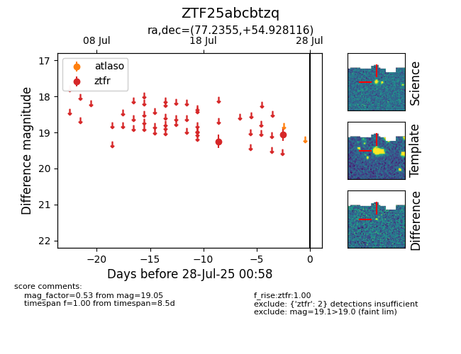

Target ZTF25abcbtzq at 2025-07-28 00:58, see:
FINK: fink-portal.org/ZTF25abcbtzq
Lasair: lasair-ztf.lsst.ac.uk/objects/ZTF25abcbtzq
ALeRCE: alerce.online/object/ZTF25abcbtzq
alt names
ZTF25abcbtzq (ztf,fink)
coordinates:
equatorial (ra, dec) = (77.2355,+54.92812)
galactic (l, b) = (154.5454,+8.74482)
photometry
last ztfr=19.05
2 ztfr detections
